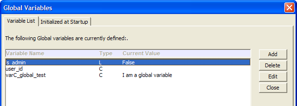
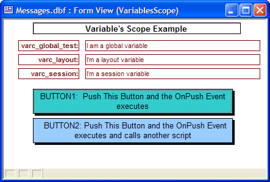
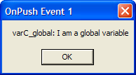
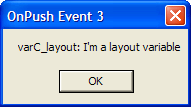
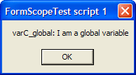
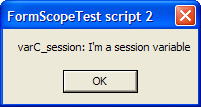
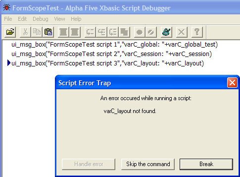

Variable Scoping
In Exercise 11, you saw how variables were used to hold values that determined the course of the application. For example, when you log in with a user name for an administrative user, the is_admin variable is set to True and this variable is used to determine which radio control on the Sign_In form you see next. (The is_admin variable is set in the event script of Button1 named Please sign in). Other variables set in Button1 s OnPush event script are user_id and user_name.
All three of these variables are set in Button1s OnPush event, but they are used later in the application by other scripts. You just saw Button2 s OnPush event script check the value of is_admin in Exercise 11. So a variable defined in one place in Alpha Five can be accessed (i.e., you can set or get its current value) in another place. However, variables are not automatically visible (i.e., accessible) in every other part of Alpha Five once they have been defined. Where a variable is accessible is called the variables scope. There are five different types of scope in Alpha Five. A variables scope level is how Alpha Five determines if a variable is available for use if it is defined in script A in script B.
Variables can be defined in four places in Alpha Five. You can create variables associated with:
a database
a table
a layout
any Xbasic script
Variables defined in the Code Editor using
the Define Global Variables  button
are available whenever the database they are created in is opened and
are global variables available to all layouts and scripts until that database
is closed (or the variable itself is destroyed in a script).
button
are available whenever the database they are created in is opened and
are global variables available to all layouts and scripts until that database
is closed (or the variable itself is destroyed in a script).
Variables defined in the table editor are also global variables and are instantiated when that table is opened.
Variables instantiated in a layout can be session, layout or global variables and are created when that layout is opened.
Finally, variables created in an Xbasic script can be global, shared or local. Global variables, once instantiated, are available to any component of Alpha Five while the same database is open. Shared variables are instantiated in one script and available to any scripts run from that original script. Local variables (which is the default when a script variable is created with just the DIM command and no qualifier) are only available in the script in which they are instantiated and are not visible in child scripts.
|
The six levels of variable scope are:
GLOBAL variables exist throughout an Alpha Five application session from the time they are created (or instantiated). A global variable defined in Fourth Form will not be available until the form Fourth Form is loaded in a particular Alpha Five session, but it will stay in existence and be available to all other scripts and layouts from that point on until you close Alpha Five. SESSION and LAYOUT variables are defined in layouts. SESSION variables exist from the time the layout they are defined in is loaded and are available to any scripts or object events run from that layout. ( LAYOUT variables are a special case beyond the scope of this book.) In a script, when you define a variable with a DIM statement you can add GLOBAL or SHARED after the DIM command. GLOBAL makes it a GLOBAL variable. SHARED makes the variable available to any scripts that are called (run) from the current script (and subsequent scripts). If you do not use either of these two options, the variable is a local variable and only visible in the current script. |
Exercise 12 - How a variables scope affects its visibility
Open the Code Editor.
Open the Interactive window.
Select View > Global Variables.
Click on the tab Initialized at Startup. You will see the following window. In this figure, you can see that the Phone Messages database has three global variables defined. One of them, varC_global_test has an initial value of "I am a global variable".

Figure 57
|
You should define any Global variables you wish to use in the Code Editor using the View > Global Variables menu selection. ( Note : This menu selection is available when you are editing a script or using the Interactive Window.) The Global Variables window has two tabs, Variable List and Initialized at Startup. You can add global variables on either tab, but if you want a global variable to persist (i.e., be stored and available the next time you open the current database) then define it using the Initialized at Startup tab. Global variables that you add through the Variable List tab will be discarded when the database is closed. Why Do Variables Need to be Scoped? This question could be rephrased as why isn't every variable a global variable? The simplest answer is that every time you create a variable, Alpha Five uses up computer memory to store the variable name and value. Especially, if you are using variable arrays, too many global variables can have an adverse impact on your applications performance (this would depend on the amount of memory and capacity of the computer in use). In advanced programming, it makes sense to limit the scope of variables to only the objects (I.e., scripts, layouts) that need to make use of them. This is good programming style and also helps others reading your code later to understand how a variable is being used. (It also lets you use the same variable name in different scripts to track different values. This can be a useful tool in advanced programming.) |
Close the Global Variables window.
Switch to the Control Panel and choose design mode for the VariablesScope form.
Select Form > Variables and the Variable Definition window appears. In this window you can see two variables have been defined. varC_layout is a layout variable with a value of "I'm a layout variable". varC_session is a session variable with a value of "I'm a session variable".
Close the Variable Definition window.
Switch to View mode for the VariablesScope form. The form appears below:
Press button1 and you will see the following:
Press OK.
Press OK.
Press OK. The code for the OnPush event script of Button2 is different from that of Button1. Instead of executing the ui_msg_box command you saw above, this script plays a saved Xbasic script. The code is:
Press Button2.
Press OK.
Press OK.
This time an error message is displayed. The varC_layout variable was not found. Click the Break button until you can click the X button on the Debugger menu, then close the Debugger.
Switch to design mode for the VariablesScope form.
Right-click on BUTTON2 and select Events > Pop-up Editor. In the script edit window change the command to:
Click Save, then Close.
Switch back to view mode for the form.
Click on BUTTON2.
Click through the three message boxes. When you change the command in Step 16 from script_play() to script_play_local() you tell Alpha Five to give the script access to the layout variables of the layout this script was launched from. Since the script was played from the OnPush event of a child object of the VariablesScope form layout, this script now has access to the VariablesScope layout variables. The third message box command now has access to the layout variable and displays without an error.
Close the VariablesScope form.
Open the Interactive window.
Type:
Type:
Select File > New > Script using Xbasic editor.
Enter the following lines in this new script:
Press Save and give the script the name "momma".
Select Code > Run. The script displays two message boxes in turn and the two variables you created are displayed.
Select File > New > Script using Xbasic editor.
Enter the following lines in this new script:
Press Save and give the script the name "child of momma". Your screen should look like this:
The child of momma script tab is still the active tab. Press the Run
 button. The following error
message box appears:
button. The following error
message box appears: Click the Break button until you can click the X button on the Debugger menu, then close the Debugger.
Click on the momma script tab. Change the first line to:
Save the script.
Choose File > Close Code Editor. You are at the Control Panel.
Click on the Code tab.
Double-click on the momma script to run it. The two message box commands in the momma script appear followed by the message box in the child of momma script. Since the two variables varN_smallnumber and varN_bignumber are both DIMmed as SHARED in the momma script, they are both available to the child of momma script.
Open the momma script to edit it. Add the following line at the end:
Now edit the child of momma script and make the variable varN_diff SHARED. Save your changes.
Rerun the momma script. tHe error has been fixed by sharing the variable between the two scripts.
Close all windows.
|
Global variables can be defined in other parts of your application besides the Initialized at Startup tab of the Global Variables window. As they are instantiated you can monitor all global variables from the Variables List tab of the Global Variables window. |

Figure 58
All three of the variables whose definitions you observed in Steps 1 to 7 of this lesson are displayed on this form. So varC_global_test is available to this form (as you would expect) since it was instantiated as a global variable when the Phone Messages database was opened. Likewise, varC_layout and varC_session display with the values they are instantiated with when this form opens.
The two buttons on this form both have OnPush events defined that both do basically the same thing. Pushing either button will display a message box showing the three variables and their variables. The difference in the events is crucial for understanding a variables scope.
|
The Xbasic command ui_msg_box() displays a message box with a title and the contents of a character string and an OK button to continue. The character strings displayed in the ui_msg_box() commands in this exercise are: line 1 varC_global: + varC_global_test line 2 varC_session: + varC_session line 3 varC_layout: + varC_layout |
Button1' s OnPush event code is this:
|
ui_msg_box("BUTTON1 OnPush Event - popup 1","varC_global: "+varC_global_test) ui_msg_box("BUTTON2 OnPush Event - popup 2","varC_session: "+varC_session) ui_msg_box("BUTTON3 OnPush Event - popup 3","varC_layout: "+varC_layout) |

The varC_global variable is displayed by the first command line in the OnPush event.

The varC_session variable in displayed from the OnPush event.

The varC_layout variable in displayed from the OnPush event.
|
script_play("FormScopeTest") |
|
The Xbasic command script_play() loads and runs the script named as the command's parameter. |
The content of the Xbasic script, FormScopeTest, is:
|
ui_msg_box("FormScopeTest script - popup 1","varC_global: "+varC_global_test) ui_msg_box("FormScopeTest script - popup 2","varC_session: "+varC_session) ui_msg_box("FormScopeTest script - popup 3","varC_layout: "+varC_layout) |
This is the same exact code (except for the message box's title parameters) as you saw in Step 8 for the :Button1.OnPush event. But now, there is another layer involved. The :Button2.OnPush event plays a script and that script code runs separately from the layout of the VariablesScope form. You can think of the :Button1.OnPush event script as running within the layout and the FormScopeTest script running outside the layout (though still within the layout session. So what do you think will happen to the layout variable and the session variable when the Xbasic commands of the FormScopeTest script tries to access each of them?
|
Whenever a layout is opened (viewed), Alpha Five begins a new "session". Layout objects and their event scripts can access "layout" variables. Scripts launched through an object that is part of a particular layout are part of that script's session and have access to the layout's session variables. |

The varC_global variable is displayed from the OnPush event.

The varC_session variable is displayed from the OnPush event.

In Step 12, the variable defined as a session variable was found and displayed. But the FormScopeTest script that is running does not have access to the layout variables of the VariablesScope form.
|
script_play_local("FormScopeTest") |
|
The script_play_local() command gives the "called" script (i.e., the script being played by this command) access to any variables available in the "calling" script (i.e., the script that has this command in it). In this exercise, the calling script is the :Button2.OnPush event script and the called script is FormScopeTest. |
|
A SHARED variable that is DIMmed in a calling script is available in a called script that is run with the script_play() command. GLOBAL variables are, of course, available to any subsequently run scripts once they are instantiated in a script. Variables intantiated with a regular DIM command (without the SESSION or GLOBAL qualifier are "local" variables only visible in the script they are created. However, if you play a subsequent script with the script_play_local() command, then local variables are visible in the called script also. |
|
? not_a_variable |
Alpha Five responds with "ERROR: not_a_variable not found".
|
? is_admin |
Alpha Five returns .T. or .F. (depending on whether you previously logged in as an administrative user of the Its For You application during this Alpha Five session).
|
DIM varN_smallnumber as N DIM SHARED varN_bignumber as N varN_smallnumber = 2 varN_bignumber = 8888 ui_msg_box("Momma script", STR(varN_smallnumber,4,0)) ui_msg_box("Momma script", STR(varN_bignumber,4,0)) |
|
While you are typing in the Xbasic commands in Step 28, be sure to take advantage of Alpha Five's bubble help and command auto-completion. as you type a command, as soon as the next command that you want appears at the top of the bubble list, just press Enter and the rest of that command word will be filled in for you. For example, as you type: "DIM S" as shown here, Alpha Five's bubble help shows the word "SHARED".
Press Enter and the full word will be filled in automatically for you. Alpha Five will also show object and variable names that have been instantiated (in addition to commands) in bubble help and will auto-complete typing in their names as well. |

|
DIM varN_diff as N varN_diff = varN_bignumber - varN_smallnumber ui_msg_box("child of momma", STR(varN_diff,4,0)) |
|
The type conversion function STR() is necessary in the ui_msg_box() command in Step 28 because the second parameter of the ui_msg_box() command must be a string and the variable used here is of type numeric. |

Figure 59

Alpha Five reports that varN_smallnumber cannot be found. If you look back at the momma script shown in step 26, you can see that varN_bignumber was DIMmed as SHARED. And since you ran the momma script, this variable is available to any other scripts youre running while in the Code Editor.
|
DIM SHARED varN_smallnumber as N |
Add this line at the end:
|
script_play("child of momma") |
|
The type conversion function STR() is necessary in the ui_msg_box() command in Step 28 because the second parameter of the ui_msg_box() command must be a string and the variable used here is of type numeric. |
|
ui_msg_box("Momma script", STR(varN_diff,4,0)) |
Run the script. What happened? Save the script.
Next